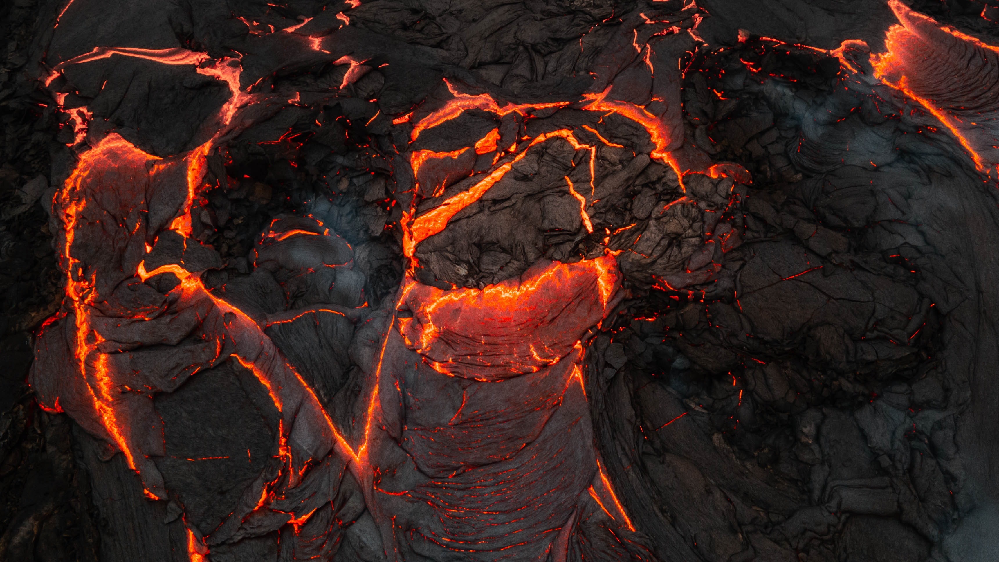

You turn around, and follow the path back to the main road. When you get to the main road you realise it isn't a road at all, its a river of lava. And now the whole floor is lava. You quickly jump onto a tree stump, but it gradually sinks into the lava with you on it. An unexpected end to your relaxing jaunt to the New Forest.
